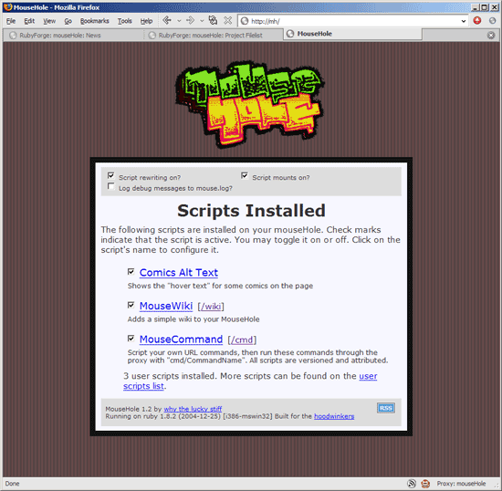

Here is MouseHole 1.2 #

Here, you remember MouseHole. We all came up with it on this thread. And then, a month ago we started playing with the Hoodlum proxy. Finally, here is the release that combines Ryan’s gzip code from WonderLand and MenTaL’s Greasemonkey code and all the input from covert mice, where’er they are. The software was sired by a blog.
- Download MouseHole 1.2:
- Windows installer.
- or Source zip. (Ruby, yaml, dbm, rexml libraries required.)
- or Source tarball. (Ruby, yaml, dbm, rexml libraries required.)
- My own MouseHole scripts.
- The MouseHole wiki.
- Mailing list is mousehole-scripters
My favorite feature of MouseHole 1.2 is the support for intercepting hosts. For example, if you’re running MH as your proxy, you can type http://mh/ into the URL bar to get to the doorway. Or mouse.hole.
Mounted scripts can be travelled to using mouse.mount. So, for MouseWiki: mouse.wiki. For MouseCommand: mouse.cmd.
Plenty of other features, though. An RSS feed of your installed scripts (perfect for Firefox’s LiveBookmark), faster HTML cleaning, improved interface for URL matches. Best of all, a new register_uri method for scripts that want to safely allow cross-site Ajax stuff on certain domains.
MrCode
Cool, at least I’ve contributed something fairly useful to the Ruby community in the past month in the form of the great
decodemethod. Next, I’ll create a method calledrazzle_dazzle, whose purpose I’ll leave up to your imagination. But prepare to be astounded!why
If you don’t mind, I’ve added
razzle_dazzleto the 1.3 changelog in anticipation.MenTaLguY
Excellent hats, why.
Now we’ve simply got to implement streaming for non-filtered resources and we’re all set.
(I know everyone uses BitTorrent to download those 500MB PDFs nowadays, but what about the people who don’t?)
Oh. Oh. Also take advantage of webbybrickish support for chaining to a proxy upstream. That one sounds easiest; I may take a stab or two this week.
why
Yep, yep, all that.
I’d really like:
rynok
/me likes streaming for non-filtered resources. i wonder if i couldn’t take a whack at that…
kode
yes, yes… excellent ideas. now I just have to acquire access to hoodwink’d somehow. the registration process worked once, but now all logging in and trying to reregister (since I received no email I think I was supposed to receive) results in ye olde internal server error.
why
I fixed that bug this morning, kode. Give it a scoop.
phil602
A textarea widget. Will replace textareas out in the world with something totally ENHANCED that keeps backups of submitted text in the local database, in case a form flubs.
Please please please. Textareas suck.
What else could we do besides autosave? ... gears turning …
mfp
I have yet to read to code, but I suspect I’m still locked out of the coterie due to my ISP ’s transparent proxy (until I patch hoodwink.user.rb and open-uri again).
Trejkaz
Still getting a 503 error if I enable Hoodwink’d. As usual, everything else seems to work smoothly.
Trejkaz
Something I can’t figure out. I’m hitting http://hoodwink.d/ with the proxy set up properly. I can see the request hitting MouseHole, scrolling by.
localhost – - [29/Sep/2005:09:35:56 AUS Eastern Standard Time] “GET http://hoodw ink.d/ HTTP /1.1” 503 828 - → http://hoodwink.d/
The error which is coming out is coming from our work proxy, which would be expected, but I have an entry in the hosts file which sets hoodwink.d to IP address 127.0.0.1 (I then tunnel that through SSH and out the network.)
So what I don’t get is, if hoodwink.d is at 127.0.0.1, why is MouseHole going through our proxy at all? I can’t see a HOSTS entry in the mouseHole.rb script itself… so where is it getting it from?
greasygreasy
A BitTorrent downloader.user.rb. Manages many downloads. Intercepts torrents in the wild. Back home, back in the hangar, its reporting progress and letting you cancel or whatever.
Holy crap. This is way too cool to be good for your health.
Trejkaz
Note that running MouseHole as a transparent proxy for an entire LAN would make said BitTorrent client multi-user. :-D
bluetechnx
I get the following error when I try to run mouseHole (didn’t happen in the older version). I am under Windows XP and I can see dbm.rb is in the directory:
C:\Program Files\Ruby\lib\ruby\1.8\yaml
But I get the following error msg:
why
bluetechnx: Actually, you need
lib/ruby/1.8/dbm.rbif you’re going to run it from the source code. Otherwise, use the Windows installer, it’s got all the stuff.drew
Please, an upstream proxy support feature, please, please !
I don’t yet know enough Ruby to do this myself (having only just finished the excellent Poignant Guide last week), but I have been following the hoodwink.d/greasybacon/chunkymonkey phenomenon from the start, and have got mouseHole working on my Mac at home.
I just can’t get it to work through the nasty MS ISA proxy at work, which requires authentication – can anyone point me to some code to get ISA authentication working ??
Unlike Trejkaz (above) I have no nice things like SSH to access the outside world – alas, nothing but port 80 through the evil ISA proxy.
Trejkaz
I’ve just discovered a new way to break it. Any XML entity in a wink makes the parser barf on pulling the winks. :-)
Best thing is, I didn’t even insert the entity myself, it was the text filter’s cleverness. :-)
Trejkaz
I used to run SSH at home on port 443 back when port 22 was blocked. That was a rather convenient way around being blocked on one but not the other.
kode
I get the same error as Trejkaz now, other than that, it’s really cool. :) (error)
Trejkaz
This is ugly, but in hoodwinkd.user.rb, replace the xhtml method definition with:
That bypasses the bug and everything renders fine. I have to wonder what sort of evil it does open up, though…
bubu
where’s linux version? ruby-gnome2 is quite mature for multiplatform developing
Corsaro
I recieved: ERROR LoadError: No such file to load—htree
I am using the win32 installer on this bawx.
sporkmonger
Can we change the top of mouseHole to read:
The whole “cannot find such and such file” thing is annoying.
Marcus
Ok, I’m confused. I need to be running Mousehole in order to install hoodwinkd.user.rb, but do I also need Hoodlum running to access it? I tried setting hoodwink.d to 127.0.0.1 in my etc/hosts file, but no dice. Any recommendations for this lowly end-user?
sixby28
I’ve created my hoodwinked login and password, but whenever i have the script turned, nothing loads. i get the following error:
Service Unavailable A connection attempt failed because the connected party did not properly respond after a period of time, or established connection failed because connected host has failed to respond. – connect(2) WEBrick/1.3.1 (Ruby/1.8.2/2004-12-25) at hoodwink.d:80
When I turn it off – everything is fine. Makes me sad.
Comments are closed for this entry.